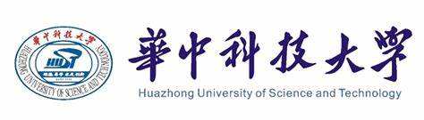
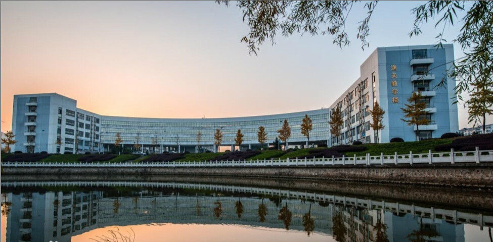
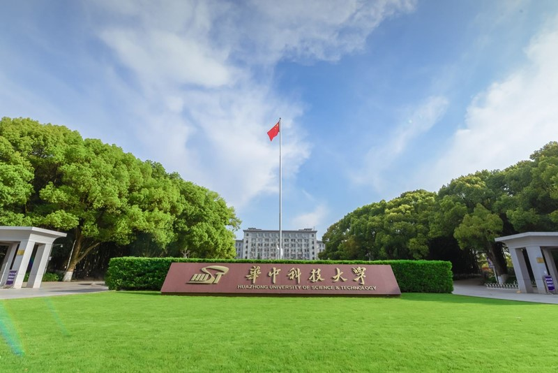
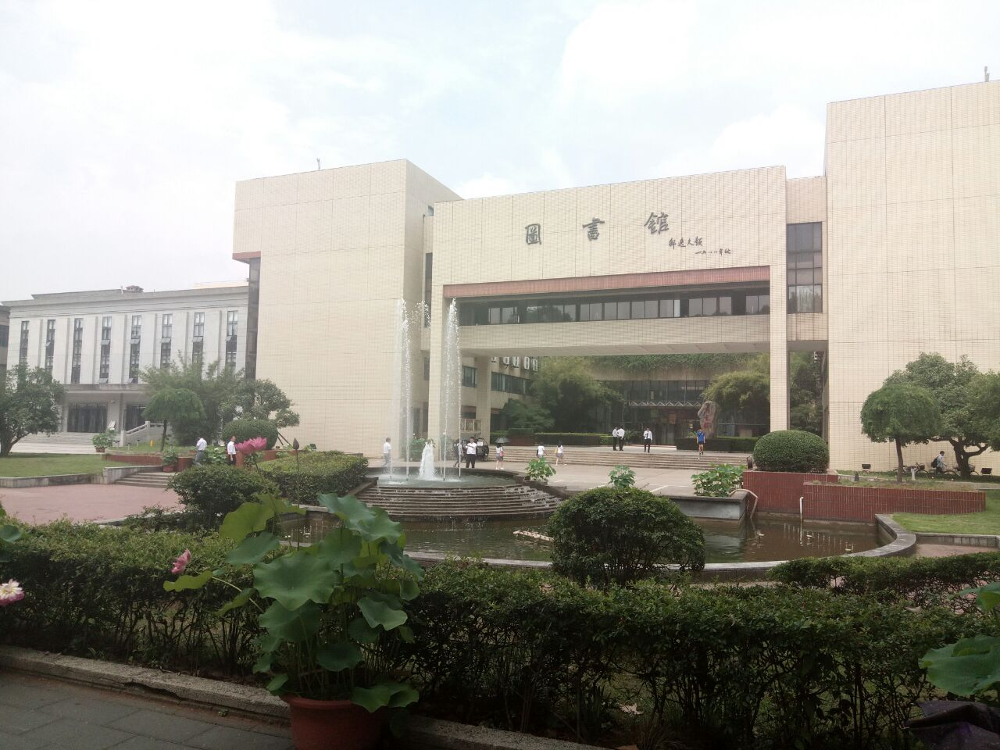
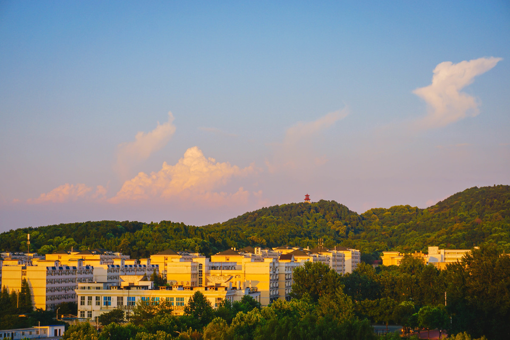

我的学校

学科门类齐全，涵盖哲学、经济学、法学、教育学、文学、理学、工学、医学、管理学、艺术学、交叉学科等 11 大学科门类。
拥有 7 个一级学科国家重点学科，15 个二级学科国家重点学科（内科学、外科学按三级计），7 个国家重点（培育）学科。在教育部第四轮学科评估中，机械工程、光学工程、生物医学工程、公共卫生与预防医学等 4 个学科进入 A+，A 类学科 14 个，B + 及以上学科 33 个。9 个学科入选国家第二轮 “双一流” 建设学科名单。
学校拥有一支高素质的教师队伍，现有专任教师 3700 余人，其中教授 1500 余人，副教授 1400 余人。教师中有院士 20 人，“973 计划” 项目首席科学家、重大科学研究计划项目首席科学家、国家重点研发计划项目首席科学家 302 人，国家级教学名师 13 人，国家百千万人才工程入选者 43 人。
校园风景展示



